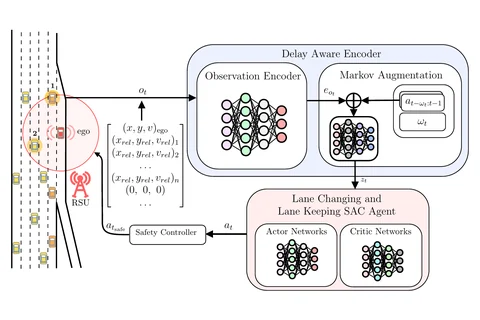

IoT-JDelay-Aware Reinforcement Learning for Highway On-Ramp Merging under Stochastic Communication Latency
IEEE Internet of Things Journal, 2026
A roadside unit tells the merging car where the other cars are, but that picture can be up to two seconds old. We treat merging as a random-delay MDP and give a SAC agent a GRU encoder that recovers the current state from stale observations and its own recent actions, plus a physics-based safety check. Over 99% merge success in dense SUMO traffic built from NGSIM data.